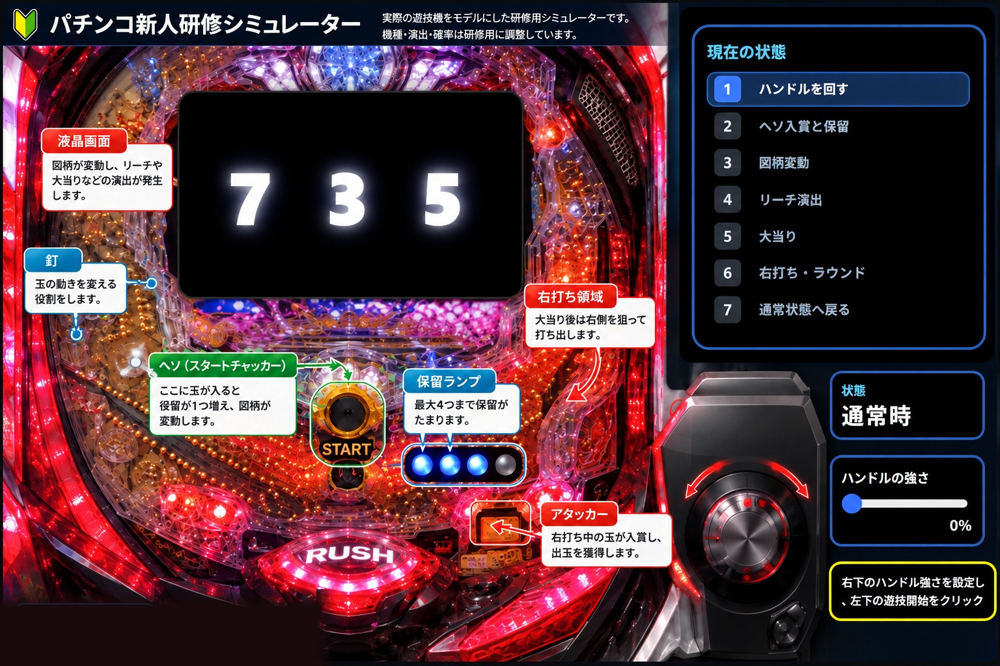

恋の予感…
右打ち →
遊技開始を押してください
ヘソ入賞！ 保留が増えました
V入賞口
大当たり後、「Vを狙え！」の間に右打ちし、10秒以内に玉を1個入賞させます。
大当たり時の重要ポイント
大当り後はⅤ入賞をしないと大当たりの権利が消失します。機種によって決められた時間内に入賞させてください。
大当たり中のアタッカーも〇個入るまでか、機種によって決められた時間で閉じてしまいます。
玉掛かり、玉詰まり、玉飛び不良のトラブルでお客様が損をしてしまう可能性があります。
台の状況とトラブル内容で対応方法は様々ですので、研修中にマスターしお客様に迷惑が掛からない様にしましょう。
現在の状態
1ハンドルを回す
2ヘソ入賞と保留
3図柄変動
4リーチ演出
5大当り
6右打ち・V入賞
7右打ち・大当たりアタッカー入賞
8通常状態へ戻る
通常時は25～40％が目安です。
右下のハンドル強さを設定し、
左下の遊技開始をクリック
ハンドルの強さ0%
研修 STEP 1：「遊技開始」または「1発発射」を押してください。
玉は左側の発射レールから盤面上部へ上がり、液晶役物の左側で釘に当たりながら落下し、風車→道釘→ヘソへ向かいます。